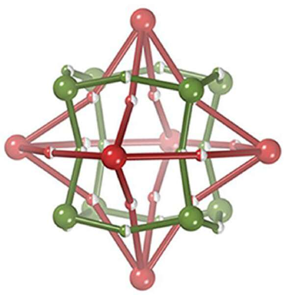
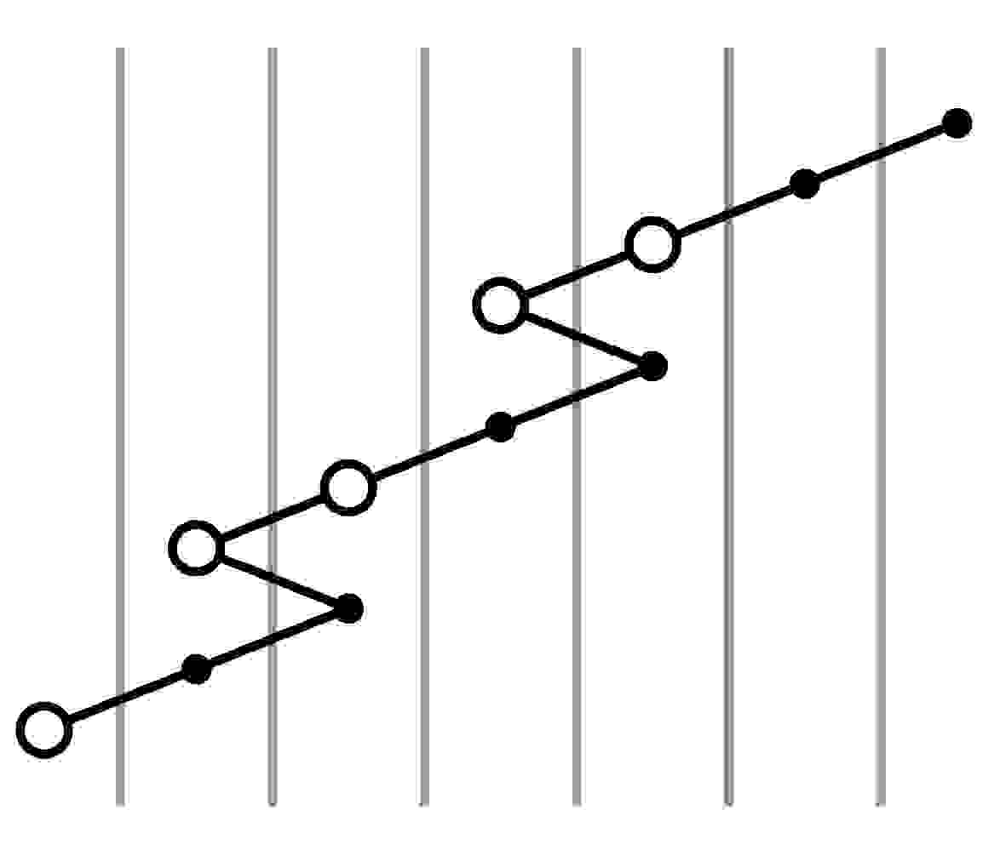

Publications and Preprints
Undergraduate
|  |
A Theoretical Schema for Building Weavings of Nets via Colored Tilings of Two-Dimensional Spaces and Some Simple Polyhedral, Planar and Three-Periodic Examples (with Stephen Hyde, 13 pages, submitted Jan 2018, IJC 58-9 (2018) 1144-1156) We analyse two-component “weavings” made of a pair of dual (p,q) and (q,p) nets that undulate on both sides of the sphere, the plane and the hyperbolic plane. Families of weavings are described, sharing a common parent net. The examples describe zero-, two- and three-periodic weavings in three-space. We derive all edge-2-transitive weavings with (p,q) = (3,3), (4,3), (4,4), (4,6) using Delaney-Dress tiling theory, described in detail. The two-dimensional hyperbolic weaving are mapped into (euclidean) three-space to form a pair of catenated crystalline nets. The examples suggest generalisations to other weavings on surfaces, including weavings of filaments. A simple hyperbolic weaving of filaments is derived, analogous to the common warp-and-weft filament weaving in the plane. The resulting three-periodic pattern is related to the molecular-scale weaving in the synthetic COF-505 material synthesized by Liu et al (2016). |
|  |
Khovanov complexes of rational tangles (20 pages, posted Jan 2017, updated Dec 2018, arXiv:1701.07525) We show that the Khovanov complex of a rational tangle has a very simple representative whose backbone of non-zero morphisms forms a zig-zag. Furthermore, this minimal complex can be computed quickly by an inductive algorithm. (For example, we calculate Kh(82) by hand.) We find that the bigradings of the subobjects in these minimal complexes can be described by matrix actions, which after a change of basis is the reduced Burau representation of B3. |